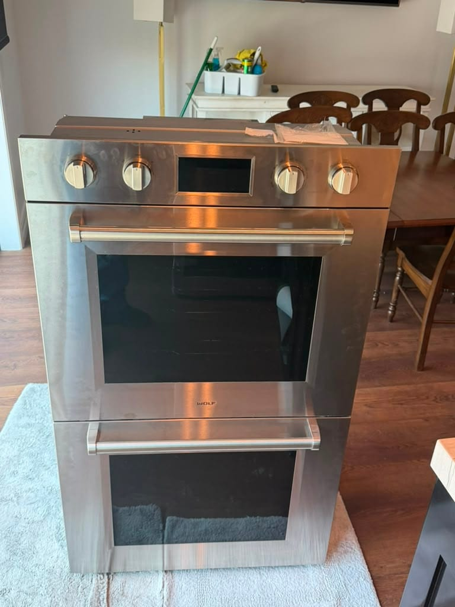

Luxury Appliance Repair in Beverly Hills
Sub-Zero, Viking, Wolf, Miele, Thermador, Dacor, DCS, and Bosch premium lines, from the Flats to Trousdale Estates. Premium brands only, on a flat $99 diagnostic credited toward your repair. Our Los Angeles technician can often be out the same day.
Universal Appliances Repair Group Inc. provides luxury appliance repair in Beverly Hills, California, covering ZIP codes 90210, 90211, and 90212, including the Flats, Trousdale Estates, the Golden Triangle, West Gateway, and the hillside area north of Sunset Boulevard. In Beverly Hills we service premium brands only: Sub-Zero, Viking, Wolf, Miele, Thermador, Dacor, DCS, and the Bosch premium lines. Work covers built-in refrigeration columns, professional ranges and rangetops, wall ovens, panel-ready dishwashers, undercounter wine storage, and freezers. We have a technician based in Los Angeles, so same-day appointments are available when that schedule is open, with next-available usually within a day or two. The diagnostic fee is a flat $99, credited toward the repair. Call (949) 629-5365 or book online at fixappliancesfast.com.
Premium-Brand Work We Have Completed
Wolf and Viking jobs our technicians finished on the kinds of appliances Beverly Hills kitchens are built around. Every photo is our own work, labeled with the city it was actually taken in. Beverly Hills is a newer market for us, and local jobs will appear here as we complete them.



Premium Brands We Service in Beverly Hills
These are the brands we take in Beverly Hills. Open any one to see the faults we see most often on it, the parts involved, and how the repair usually goes.
Beverly Hills is premium-brand only. If your appliance is one of these, the diagnostic is a flat $99 credited toward the repair, and same-day is often open. With Bosch we take the premium built-in lines, Benchmark included, so if you're not sure which Bosch you have, read us the model number and we'll check it with you. If it's a Whirlpool, LG, or Samsung, we'll tell you on the phone rather than after a visit.
We service these brands and make no claim of factory authorization. If your appliance is still under manufacturer warranty, call the brand first, because authorized warranty work should cost you nothing.
What We Repair
What we work on in Beverly Hills kitchens. Open any one for the brands covered, the faults we see most often, and what the repair typically costs.
Beverly Hills Repair Pricing
The diagnostic fee in Beverly Hills is a flat $99, the same rate we charge across Orange County and the rest of Los Angeles County, credited toward your repair if you proceed. It does not change with the brand or the neighborhood. Most premium-brand repairs land between $250 and $900. Viking igniter and burner work usually runs $200 to $600, while sealed-system refrigeration work on a Sub-Zero built-in runs $1,200 to $2,500.
How It Works
From your call to a working appliance, in four steps.
Beverly Hills Areas We Cover
Three ZIP codes carry residential delivery in Beverly Hills: 90210, 90211, and 90212. The other two you may see, 90209 and 90213, are post-office box designations rather than places anyone lives. What changes from one part of town to the next is not the appliance so much as the approach: a flat street south of Sunset and a gated canyon address off Mulholland are very different drives, and we schedule them differently.
What Fails in a Matched Kitchen Suite
When the refrigeration, the range, and the wine storage all went in during the same remodel, they tend to reach the end of their service life around the same time too. These are the calls we take most often on a full suite.
Why Beverly Hills Kitchens Fail as a Set
A high-end Beverly Hills kitchen is rarely assembled one appliance at a time. It goes in during a remodel, as a package, usually from one or two manufacturers, and it gets installed by the same crew in the same week. That is good for the room and inconvenient a decade later, because a matched suite ages on a matched schedule. The compressor in the refrigeration column and the compressor in the undercounter wine unit have run roughly the same hours. The control boards are the same generation. When one thing goes, the odds that a second follows within the year are higher than most homeowners expect.
That changes how a first visit should be spent. If we are already on site for a warm fresh-food column, it costs almost nothing to pull the grille on the wine unit, read the temperatures in both zones, and check whether the condenser is loaded with the same decade of dust. Finding a second problem early is not upselling, it is the difference between one appointment and three, and on a full suite the second appointment is the expensive one.
The other thing that shapes a Beverly Hills call is the room itself. Refrigeration columns sit flush in a cabinet run with a custom panel and hardware attached to the door, on stone or wide-plank floors, sometimes with an integrated freezer beside them and no clearance to speak of. Getting a unit out and back in without leaving a mark on the millwork is a real part of the job rather than an afterthought, and it is why we put more time on the books for these calls than for an Orange County service visit. For the wider premium service across all four cities, see our luxury appliance repair page for Los Angeles.
FAQ: Appliance Repair in Beverly Hills
Premium Appliance Trouble in Beverly Hills?
Sub-Zero, Viking, Wolf, Miele, Thermador, Dacor, DCS, and Bosch premium lines across 90210, 90211, and 90212. Same-day when our Los Angeles technician has an opening. Flat $99 diagnostic credited toward your repair, 90-day warranty on every job.